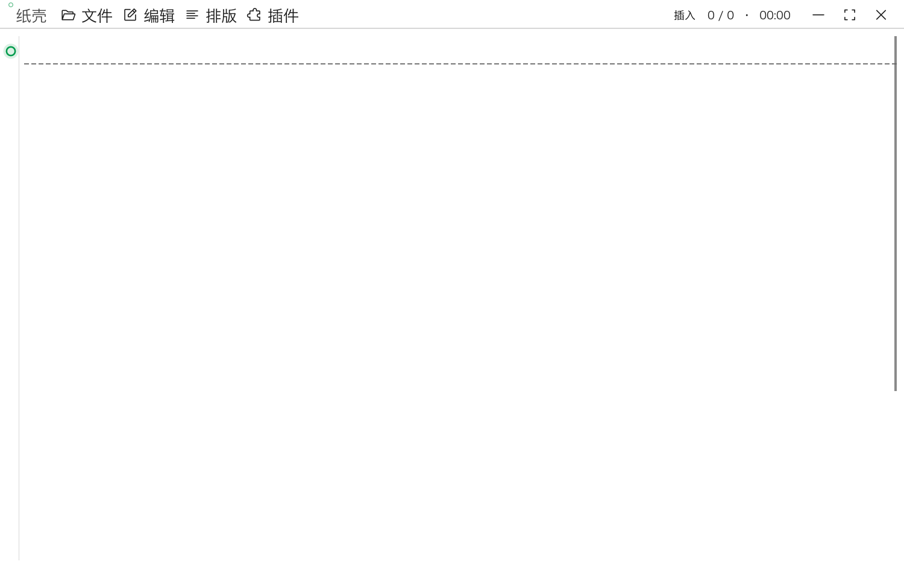

保持纸面的纯粹与呼吸感。没有杂乱的仪表盘与强加的云端逻辑，只有懂中文分词的 Vim、类 Git 的文档分支树与专注思考的自由。

没有干扰，没有多余。每一项功能都围绕写作者的自主权与心流体验而打磨。
告别传统编辑器在中文下 w、b 直接跳过一整段的痛苦。纸壳内置 Jieba（结巴分词） 算法，使光标按照中文自然语义词边界移动。Esc 轻松切回 Normal 模式，Insert 模式完全不阻碍输入法打字。
每次保存自动生成内容哈希快照并保留父引用。无需任何命令行，即可在可视树中查看演变脉络、对比不同草稿的 Diff。回退版本绝不会抹掉后续记录，从旧版本续写会自动衍生平行分支。
从温润护眼的“古雅羊皮纸”到沉静专注的“黑曜石夜”，再到插画质感的“无限地带”，随时一键切换创作心境。自由微调字体族、字号、间距与背景透明度，并支持一键导入与分享 .paperskin 皮肤包。
基于 Rust 原生内核驱动，毫秒级快速启动。你的文字以标准 .txt / .md / .org 保存在本地磁盘，绝无专有数据格式绑架，绝无未授权云端分析，彻底将掌控权还给作者。
选中文字即可添加临时思考批注。元数据通过字符偏移独立存储，绝不污染原始纯文本正文。
单汉字精准计数与专注时长分析。支持近 7 天、30 天与年度趋势总览，直观记录灵感产出。
一键导出矢量排版 PDF、优雅阅读样式的独立 HTML、Markdown 以及 macOS 原生驱动分页打印。
绿色免安装或一键拖拽即可开始使用。所有文件由 GitHub Actions 官方流水线自动编译。
| 操作系统 | 适配架构 | 下载文件 | 说明与特性 |
|---|---|---|---|
|
macOS
推荐
|
Universal (通用) | 下载 DMG ZIP 包 | 同时适配 Apple Silicon (M系列) 与 Intel 芯片 |
|
macOS (专属)
|
Apple Silicon (aarch64) | 下载 DMG ZIP 包 | 体积更小，专为苹果 M1/M2/M3/M4 架构优化 |
|
macOS (专属)
|
Intel (x86_64) | 下载 DMG ZIP 包 | 专为旧款 Intel 处理器的 Mac 机型编译 |
|
Windows
|
x86_64 | 下载 ZIP 绿色包 | 解压后直接双击 paper-shell.exe 运行 |
|
Linux
|
x86_64 | 下载 tar.gz | 解压即用，支持主流 Linux 桌面环境 |
因为当前个人开源版本未加入苹果高额收费开发者公证，macOS 会默认拦截。只需打开终端粘贴这行命令回车即可：
xattr -cr /Applications/Paper\ Shell.app
关于安装、数据安全与日常使用中的常见疑问。
由于个人开源项目尚未向苹果支付高额年费购买开发者证书，macOS Gatekeeper 安全机制可能会拦截下载包。你可以通过以下极简指令一键清除下载隔离标记：
xattr -cr /Applications/Paper\ Shell.app
或者在系统的 “设置 → 隐私与安全性” 中，滑到最底部找到被拦截的应用，点击 “仍要打开” 即可。
纸壳原生支持 .txt、.md、.markdown、.text、.org 与 .rst。文档完全以标准明文存放在你的本地磁盘中，即使离开纸壳，任意文本工具都能无损打开，绝无私有格式锁定。
绝对不会。纸壳坚持纯粹本地优先（Local-First），不包含任何遥测、埋点或自动上传逻辑。即使是版本历史和行内批注，也是以纯本地文件的形式存在你的电脑上，断网环境下功能 100% 完整可用。
纸壳在启动时会在后台安静检测 GitHub Releases。当有新稳定版本时，点击菜单栏 “文件 → 关于纸壳” 即可一键下载并更新，安装前会自动比对 SHA-256 签名，且会为你平滑恢复当前编辑的文件。
没有干扰，没有专有格式绑架。下载即用，开启独属于你的沉浸写作心流。